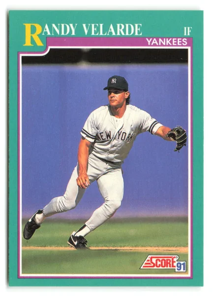

Randy Velarde
Career Highlights & Facts
(Facts are AI-generated and may require verification)
- Recorded an unassisted triple play against the New York Yankees in 2000.
- Played for four different American League teams over a 16-season career.
- Achieved a career batting average of .276 while serving primarily as a versatile utility infielder.
Would you like to find out more about Randy Velarde?
Career Totals
| WAR | AB | H | HR | BA | R | RBI | SB | OBP | SLG | OPS | OPS+ |
|---|---|---|---|---|---|---|---|---|---|---|---|
| 24.9 | 4244 | 1171 | 100 | .276 | 633 | 445 | 78 | .352 | .408 | .760 | 101 |
Statistics via Baseball-Reference.com
The Original Clue